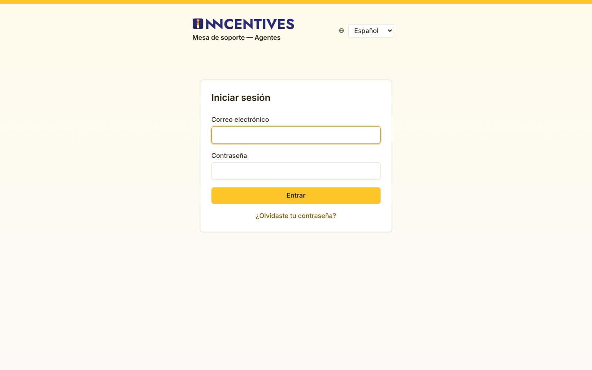
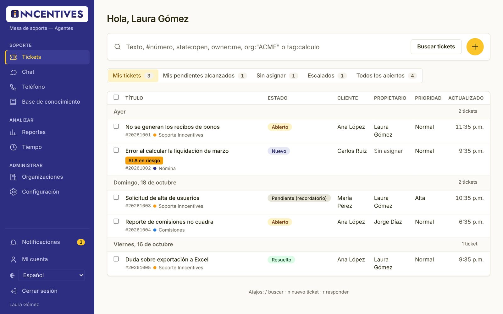
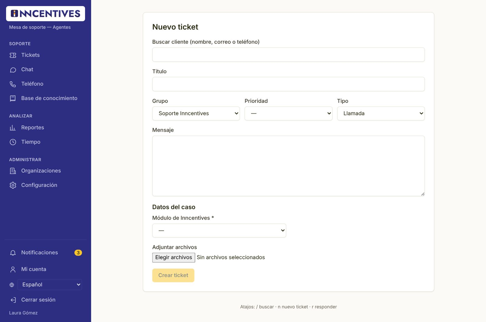
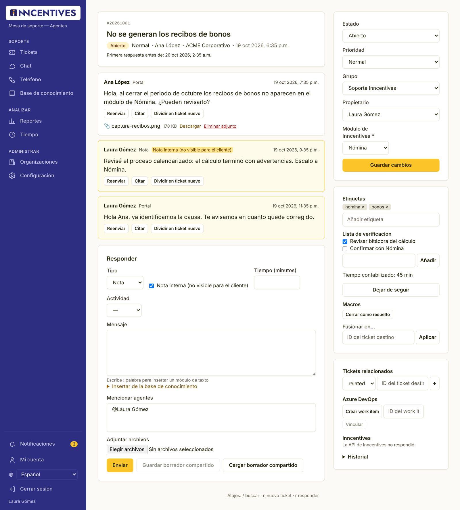
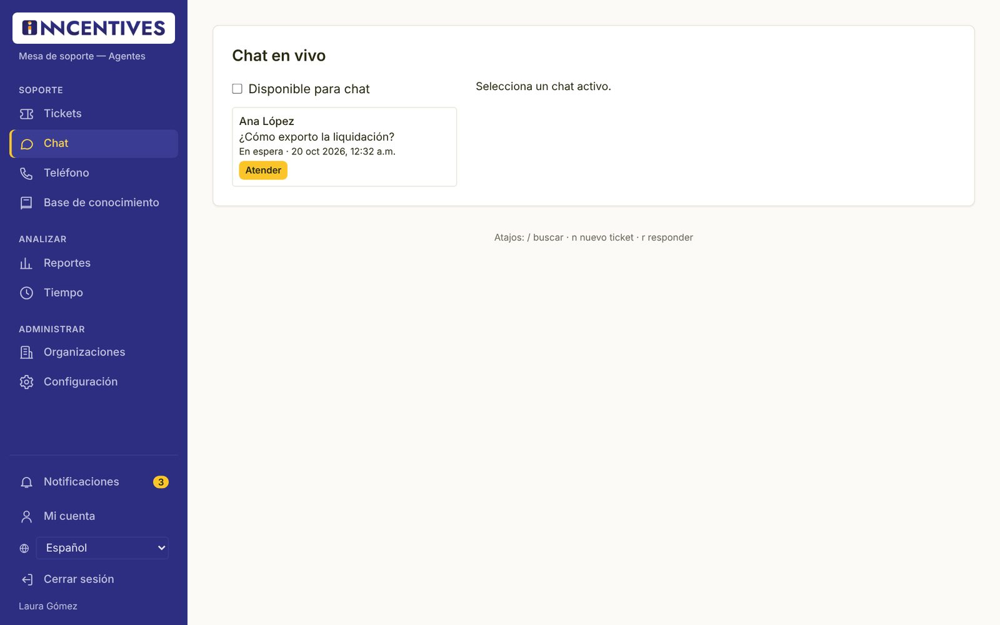
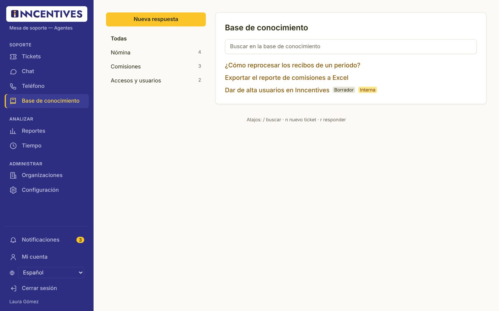
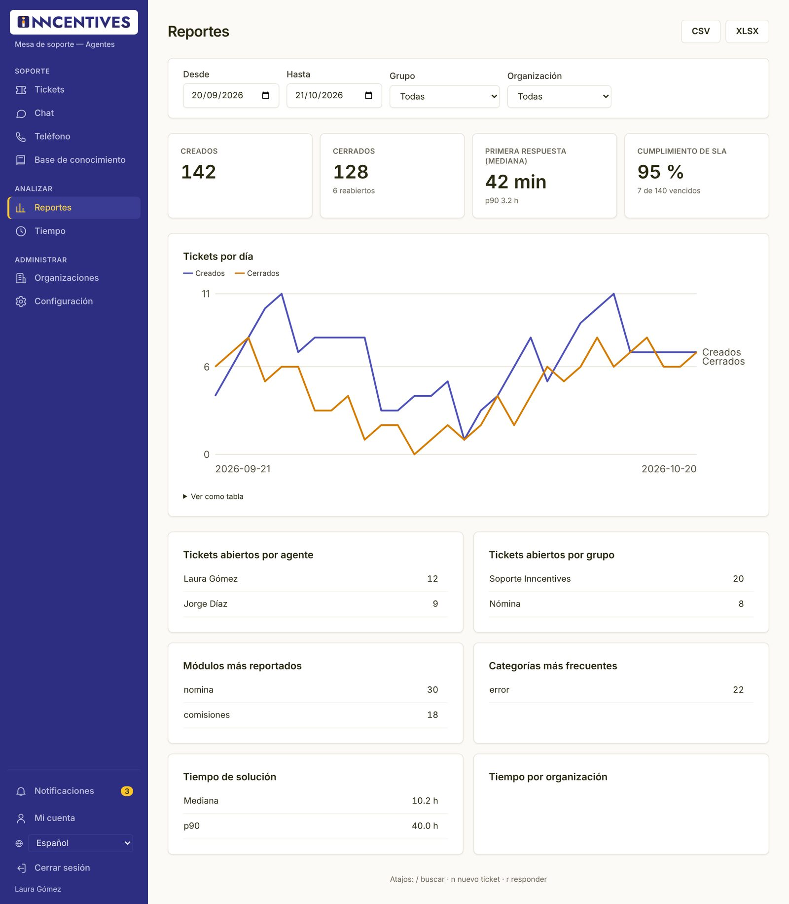
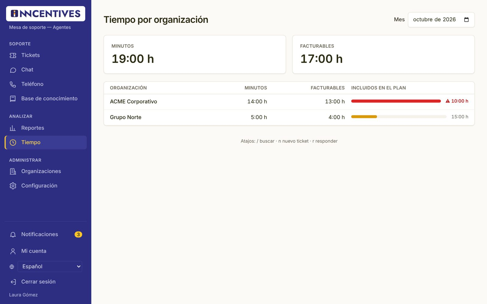
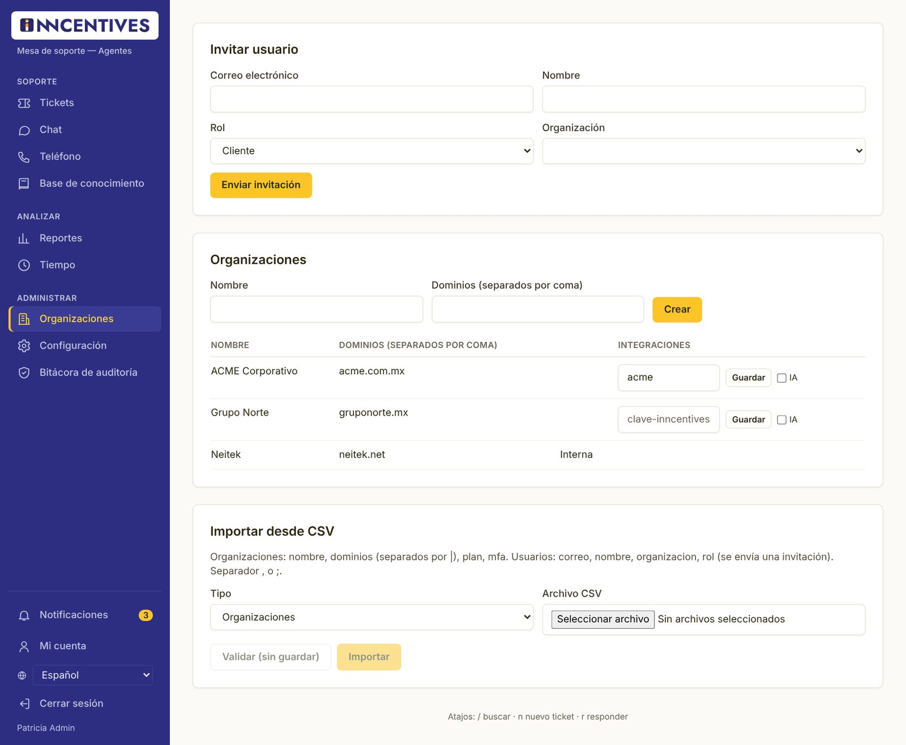
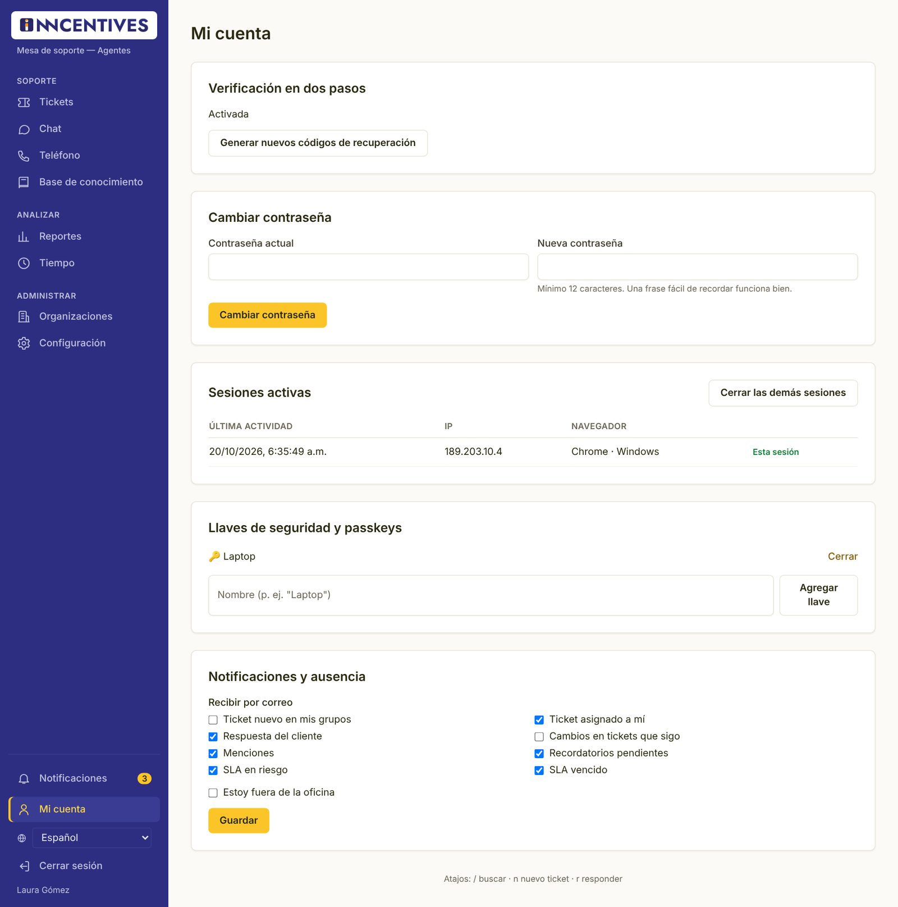

Manual del agente
Cómo atender tickets en la mesa de soporte: vistas, búsqueda, respuestas, notas internas, chat, teléfono, reportes y registro de tiempo.
01Acceso y seguridad
Las cuentas del equipo de soporte siempre usan verificación en dos pasos.
Activar tu cuenta
Recibirás una invitación por correo. Abre el enlace, escribe tu nombre y una contraseña de al menos 12 caracteres y pulsa Crear cuenta.
Iniciar sesión

- Abre la dirección de tu mesa de soporte en el navegador.
- Escribe tu Correo electrónico y tu Contraseña y pulsa Entrar.
- Si tienes activada la verificación en dos pasos, escribe el Código de 6 dígitos que muestra tu app de autenticación y pulsa Verificar. También puedes usar tu llave o passkey, o un código de recuperación (Usar un código de recuperación).
Configurar la verificación en dos pasos
- Instala una app de autenticación en tu teléfono (Microsoft Authenticator, Google Authenticator, 1Password u otra).
- En la pantalla Configura la verificación en dos pasos, escanea el código QR con la app. Si no puedes escanearlo, captura la clave que aparece debajo.
- Escribe el código de 6 dígitos que muestra la app y pulsa Activar. Si prefieres, usa Usar una llave de seguridad o passkey en su lugar.
- Aparecerán tus códigos de recuperación. Guárdalos en un lugar seguro (por ejemplo, tu gestor de contraseñas): no se volverán a mostrar. Pulsa Ya los guardé.
La verificación en dos pasos es obligatoria para agentes y administradores. La primera vez que entres, la aplicación te llevará directamente a configurarla.
Si olvidaste tu contraseña
- En la pantalla de inicio pulsa ¿Olvidaste tu contraseña?.
- Escribe tu correo y pulsa Enviar enlace. Por seguridad siempre verás el mismo mensaje, exista o no la cuenta.
- Abre el enlace del correo, escribe tu Nueva contraseña, confírmala y pulsa Cambiar contraseña.
02La pantalla de trabajo
El menú de la izquierda agrupa las funciones en Soporte, Analizar y Administrar.

| Sección | Opciones |
|---|---|
| Soporte | Tickets, Chat, Teléfono, Base de conocimiento. |
| Analizar | Reportes y Tiempo. |
| Administrar | Organizaciones y Configuración (para un agente, solo la pestaña de Tokens de API). |
| Abajo | Notificaciones, Mi cuenta, idioma y Cerrar sesión. |
Notificaciones
La campana muestra un contador con lo que no has leído (tickets nuevos en tus grupos, asignaciones, respuestas de clientes, menciones, recordatorios y avisos de SLA). Pulsa un aviso para abrir el ticket o Marcar todas como leídas.
Atajos de teclado
| Tecla | Qué hace |
|---|---|
| / | Lleva el cursor al buscador de tickets. |
| n | Abre un ticket nuevo. |
| r | Lleva el cursor al cuadro Mensaje para responder el ticket abierto. |
Los atajos no funcionan mientras escribes en un campo ni si tienes presionada Ctrl, Alt o Cmd.
03La lista de tickets
Las vistas reúnen los tickets según su situación; la búsqueda encuentra cualquier ticket.
Vistas
Las pestañas sobre la lista son las vistas. Las más comunes son Mis tickets, Mis pendientes alcanzados, Sin asignar, Escalados, Todos los abiertos, Por verificar y Mis menciones. Cada una muestra su contador; el administrador puede cambiarlas.
La lista agrupa por día de última actualización y muestra, por ticket: título, número y grupo (con su punto de color), estado, cliente, propietario, prioridad y hora.
Avisos de SLA
Junto al título pueden aparecer SLA en riesgo (queda poco tiempo para cumplir el compromiso) o SLA vencido (ya se pasó). El símbolo ⚠ indica que el ticket contiene posibles datos personales.
Estados
| Estado | Qué significa |
|---|---|
| Nuevo | El ticket se acaba de crear y nadie lo ha trabajado todavía. |
| Abierto | El equipo de soporte está trabajando en él. |
| Pendiente (recordatorio) | En espera de algo (por ejemplo, información del cliente) hasta una fecha; ese día vuelve a la bandeja del agente. |
| Pendiente de cierre | Se cerrará solo en la fecha indicada si nadie responde. |
| Resuelto | Se dio una solución; si respondes, el ticket se reactiva. |
| Cerrado | El caso terminó. |
| Fusionado | Se unió con otro ticket del mismo caso; la conversación sigue en el otro. |
Buscar
| Escribe | Encuentra |
|---|---|
recibos bonos | Tickets que contienen esas palabras. |
#20261001 | El ticket con ese número. |
state:open · estado:open | Por estado (new, open, pending_reminder, pending_close, resolved, closed). |
owner:me · propietario:yo | Tickets asignados a ti. |
org:"ACME" · organizacion:"ACME" | Por organización del cliente. |
grupo:Nómina · group:Nómina | Por grupo. |
tag:calculo · etiqueta:calculo | Por etiqueta. |
Puedes combinarlos: recibos org:"ACME" state:open. Además de tickets, la búsqueda muestra artículos de la base de conocimiento, personas y organizaciones.
Cambios en varios tickets a la vez
- Marca las casillas de los tickets (o la casilla del encabezado para seleccionar todos).
- En la barra «3 seleccionados» (con tu número de tickets) elige un Estado…, escribe en Añadir etiqueta o elige una Macro….
- Pulsa Aplicar. Verás cuántos se actualizaron, por ejemplo «3 de 3 actualizados». Cada ticket se valida por separado según tus permisos.
04Registrar un ticket
Usa esta pantalla para llamadas, correos que llegaron por otra vía o notas internas.

- Pulsa el botón + (o la tecla n).
- Si hay Plantilla, elige una para precargar los datos.
- En Buscar cliente (nombre, correo o teléfono) escribe al menos 2 caracteres y elige al cliente. Es obligatorio.
- Escribe el Título, revisa Grupo y Prioridad y elige el Tipo: Llamada (predeterminado), Correo o Nota.
- Escribe el Mensaje, llena Datos del caso y agrega adjuntos si hacen falta.
- Pulsa Crear ticket.
Puedes adjuntar archivos de hasta 25 MB cada uno. Todos pasan por un antivirus: mientras se analizan verás Analizando…, y solo se pueden descargar cuando están limpios. Un archivo con virus queda En cuarentena.
05Trabajar un ticket
En el detalle del ticket ves la conversación, respondes y actualizas sus datos.

Encabezado
Muestra número, título, estado, prioridad, cliente, organización, fecha y el compromiso «Primera respuesta antes de». Si otro agente tiene abierto el mismo ticket verás «También viendo: …» y, si está escribiendo, «… está escribiendo…».
Si el correo llegó de una dirección que no corresponde a un cliente registrado, aparece «Remitente sin verificar». Busca y asocia el cliente correcto antes de responder.
Mensajes
Cada mensaje indica autor, canal (Correo, Llamada, Nota, Portal, Chat, WhatsApp, SMS) y, si aplica, Nota interna (no visible para el cliente). En los correos verás el estado de entrega (Enviado, Entregado, Leído, Falló el envío…). Botones disponibles: Responder y Responder a todos (correos), Reenviar, Citar y Dividir en ticket nuevo. Si un mensaje contiene datos personales, usa Redactar datos personales.
Responder
- Elige el Tipo: Nota (predeterminado, con la casilla «Nota interna» marcada), Correo (con Para y CC), Llamada (dirección y número) o WhatsApp/SMS si el cliente escribió por ese canal.
- Si se registra tiempo, captura Tiempo (minutos) y la Actividad.
- Escribe en Mensaje. Para insertar un texto predefinido escribe
::seguido del atajo (por ejemplo::saludo) y un espacio. - Opcional: Insertar de la base de conocimiento (como enlace o contenido) y Mencionar agentes para avisar a un compañero.
- Pulsa Enviar.
Una nota con la casilla Nota interna marcada nunca la ve el cliente. Úsala para dejar contexto al equipo. Para contestarle al cliente, desmárcala o usa el tipo Correo.
- Tu borrador se guarda solo en tu navegador. Para compartirlo con un compañero usa Guardar borrador compartido; él lo recupera con Cargar borrador compartido.
- Si alguien actualiza el ticket mientras escribes, verás un aviso para revisar los cambios antes de enviar.
- WhatsApp admite respuestas hasta 24 horas después del último mensaje del cliente; SMS hasta 1600 caracteres. En ambos solo se envía texto.
Panel lateral
| Bloque | Para qué sirve |
|---|---|
| Estado, Prioridad, Grupo, Propietario | Cambia los datos y pulsa Guardar cambios. En estados pendientes aparece «Pendiente hasta». |
| Campos personalizados | Datos del caso, como el módulo de Inncentives. |
| Etiquetas | Escribe en «Añadir etiqueta» y pulsa Enter; pulsa × para quitar una. |
| Lista de verificación | Pasos pendientes del caso; márcalos al terminar o agrega nuevos con Añadir. |
| Tiempo contabilizado | Total de minutos registrados en el ticket. |
| Seguir / Dejar de seguir | Recibe avisos de los cambios del ticket. |
| Macros | Aplican varias acciones de un clic (por ejemplo, responder y cerrar). |
| Fusionar en… | Une este ticket con otro del mismo caso: escribe el ID del ticket destino y pulsa Aplicar. |
| Tickets relacionados | Vincula tickets como relacionado (related), padre (parent) o hijo (child). |
| Azure DevOps | Crea un work item o vincula uno existente para escalar a desarrollo. |
| Inncentives | Consulta procesos con error y bitácora reciente del cliente en Inncentives. |
| Asistente de IA | Si está habilitado: resumir, sugerir respuesta y clasificar. Nada se envía sin tu revisión. |
| Historial | Todos los cambios del ticket, con quién y cuándo. |
06Chat en vivo
Atiende a los clientes que inician un chat desde el portal o desde Inncentives.

- Marca Disponible para chat. Tu disponibilidad se mantiene mientras tengas la aplicación abierta en cualquier página.
- En la lista Chats aparecen los que están En espera. Pulsa Atender.
- Conversa con el cliente; cada chat es también un ticket, así que puedes agregar notas, etiquetas o tiempo.
Si cierras la aplicación, en unos 90 segundos dejas de aparecer como disponible.
07Teléfono
Encuentra al cliente que llama y registra la llamada.
- Abre Teléfono. Escribe el número en Buscar por número y pulsa Buscar tickets.
- Verás los clientes con ese número y sus tickets abiertos. Abre el ticket si la llamada es sobre un caso existente.
- Si es un caso nuevo, pulsa Registrar llamada y completa el ticket nuevo (elige al cliente).
Cuando hay telefonía conectada, una llamada entrante muestra un aviso «Llamada entrante de …» con acceso directo a la búsqueda. La lista Llamadas recientes se actualiza cada 30 segundos.
08Base de conocimiento
Consulta artículos para responder más rápido o compártelos con el cliente.

- Filtra por categoría o busca con al menos 3 letras.
- Los artículos marcados Interna solo los ve el equipo de soporte.
- Desde la respuesta de un ticket, usa Insertar de la base de conocimiento para pegar el enlace o el contenido de un artículo.
Para crear o editar artículos necesitas el permiso de edición de la base de conocimiento; el proceso está en el manual del administrador.
09Reportes y tiempo
Mide la operación del equipo y el consumo de horas por cliente.

Reportes
- Filtra por Desde, Hasta, Grupo y Organización.
- Indicadores: tickets Creados, Cerrados (con reabiertos), Primera respuesta (mediana) y Cumplimiento de SLA.
- La gráfica Tickets por día compara creados y cerrados; pasa el cursor para ver cada día o usa Ver como tabla.
- Tablas: carga por agente y por grupo, módulos más reportados, categorías, tiempo de solución y tiempo por organización.
- Descarga los datos con CSV o XLSX.
Tiempo por organización

Elige el Mes. Verás los totales del mes y, por organización, el tiempo registrado, el facturable y lo incluido en su plan de soporte (formato horas:minutos).
10Organizaciones e invitaciones
Da de alta a los usuarios de tus clientes.

Invitar a un cliente
- Abre Organizaciones.
- En Invitar usuario escribe el Correo electrónico y el Nombre, deja el Rol en Cliente y elige la Organización.
- Pulsa Enviar invitación. El cliente recibe un correo para activar su cuenta.
Importar usuarios desde CSV
- En Importar desde CSV elige el Tipo Usuarios y el archivo. Columnas: correo, nombre, organizacion y rol; separador coma o punto y coma.
- Pulsa Validar (sin guardar). Si hay errores se listan por fila y campo; corrígelos en el archivo.
- Cuando la validación quede sin errores, pulsa Importar. Cada usuario recibe su invitación.
11Mi cuenta
Seguridad, avisos por correo y ausencias.

Notificaciones por correo
En Notificaciones y ausencia marca qué avisos quieres recibir por correo: ticket nuevo en mis grupos, ticket asignado a mí, respuesta del cliente, cambios en tickets que sigo, menciones, recordatorios pendientes, SLA en riesgo y SLA vencido. Pulsa Guardar.
Ausencia
Marca Estoy fuera de la oficina, indica Hasta qué fecha y el ID del agente sustituto, y pulsa Guardar.
Tokens de API
Si necesitas conectar otra herramienta, en Configuración → Tokens de API crea un token con nombre, permisos y vigencia (1 a 365 días). Cópialo en ese momento: no se vuelve a mostrar. Usa Eliminar para revocarlo.
Cambiar tu contraseña
- Abre Mi cuenta en la parte de abajo del menú.
- En Cambiar contraseña escribe tu Contraseña actual y la Nueva contraseña (mínimo 12 caracteres; una frase fácil de recordar funciona bien).
- Pulsa Cambiar contraseña. Por seguridad se cierran tus otras sesiones abiertas.
Sesiones activas
La tabla Sesiones activas muestra desde qué navegador e IP has entrado. La fila marcada Esta sesión es la actual. Si ves una sesión que no reconoces, pulsa Cerrar en esa fila o Cerrar las demás sesiones y cambia tu contraseña.
Llaves de seguridad y passkeys
Puedes entrar con la huella, el rostro o una llave física en lugar del código de 6 dígitos. Escribe un nombre (por ejemplo «Laptop») y pulsa Agregar llave; tu navegador te guiará. Para quitar una llave, pulsa Cerrar junto a ella.
Códigos de recuperación
Si perdiste los códigos que guardaste al activar la verificación en dos pasos, pulsa Generar nuevos códigos de recuperación. Los anteriores dejan de servir. Cada código funciona una sola vez.
Algunas acciones sensibles muestran «Confirma tu contraseña para continuar». Escríbela y pulsa Confirmar; es una protección por si alguien más usa tu computadora.